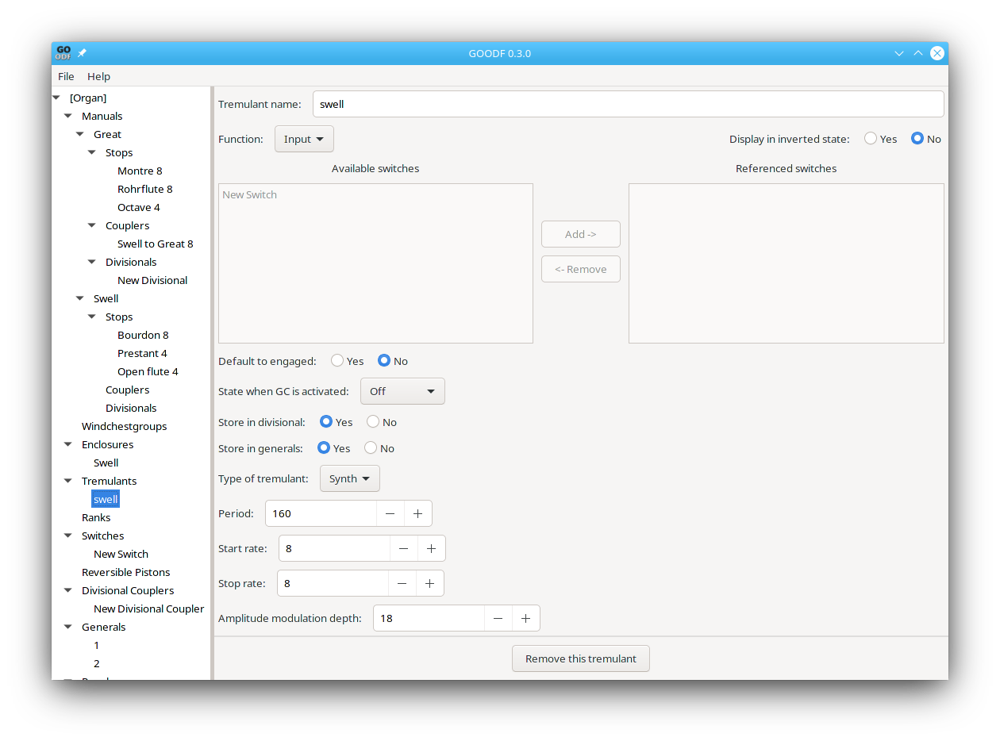

Tremulants allow a periodic variation in pitch and/or amplitude to be heard from ranks mounted on a windchestgroup which references the tremulant.
The tremulant can be controlled by switches as do stops and other switches using the Function selection.
Unique to tremulants are:
TremulantType (enumeration, default: Synth) Type of the tremulant. Valid values are: Synth (synthesized tremulant) and Wave (tremulant based on different pipe samples).
Synthesized tremulants have the following attributes:
Period (integer 32-44100, required) Period of the tremulant in ms
StartRate (integer 1-100, required) Determines the startup time of the tremulant.
StopRate (integer 1-100, required) Determines the stop time of the tremulant.
AmpModDepth(integer 1-100, required) Determines, how much the volume will be changed. Synthesized tremulants do not change the pitch.